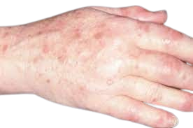
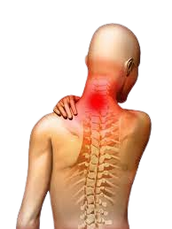

Home
At ArthritisWellness, we understand the unique challenges that individuals
facing arthritis encounter daily. Our website is your gateway to a wealth of
resources, support,
and information designed to empower you on your journey to optimal joint health.
Arthritis, while challenging, is a condition that can be effectively managed
with knowledge and support.
By understanding its challenges, recognizing symptoms early,
and adopting a proactive approach to treatment and lifestyle,
individuals can navigate the path to joint health with resilience and
empowerment.
Remember, each journey with arthritis is unique, and seeking professional guidance
is essential for better care. This guide is a stepping stone, providing
insight into the diverse landscape of arthritis and
offering a beacon of hope for those on the journey toward improved
joint well-being.
About
Welcome to ArthritisWellness once again, a dedicated space committed to providing
valuable insights, support, and resources for individuals navigating the
challenges of arthritis. Our mission is simple: to empower and inspire
individuals on their journey to improved joint health and overall well-being.
At ArthritisWellness, we are a passionate team of individuals,
including healthcare professionals, writers, and contributors, united
by the shared goal of making arthritis information accessible and fostering a
supportive community. Our collective expertise enables us to provide
comprehensive and reliable
content that speaks to the diverse needs of those living with arthritis.
We believe that knowledge is the cornerstone of effective arthritis management.
By understanding the challenges of different arthritis types, recognizing symptoms,
and adopting proactive lifestyle choices, individuals can take control of their
wellness journey. Our commitment extends beyond information; we believe in the
power of community, where shared experiences and mutual
support play a pivotal role in overcoming the challenges posed by arthritis.
Types
1. Gout
2. Reactive arthritis
3. Septic arthritis
4. Juvenile idiopathic arthritis
5. Thumb arthritis
6. Psoriatic arthritis
7. Osteoarthritis
8. Rheumatoid arthritis
9. Ankylosing spondylitis
Symptoms &
Causes
Symptoms for Gout:
Gout is a type of arthritis that causes sudden, severe joint pain.
sudden severe pain in a joint – usually your big toe, but it can be in other joints in your feet, ankles, hands, wrists, elbows or knees.
Elevated temperature, increased swelling, and redness of the skin covering the impacted joint—note that discerning redness might pose greater difficulty on darker skin tones such as black or brown skin.
Limited range of motion:
As gout advances, the normal movement of your joints may become restricted.Lingering discomfort:
Following the relief of the most intense pain, lingering joint discomfort may persist for several days to a few weeks. Subsequent attacks are likely to endure for an extended duration and may impact a greater number of joints.Inflammation and redness:
The impacted joint or joints exhibit swelling, tenderness, warmth, and a reddish hue.Intense joint pain:
While gout commonly targets the big toe, it can manifest in any joint. Frequently affected joints encompass the ankles, knees, elbows, wrists, and fingers. The pain typically reaches its peak severity within the initial four to 12 hours after onset.Causes for Gout Arthritis:
Gout occurs when there is an accumulation of urate crystals within a joint, leading to the inflammation and acute pain associated with a gout attack. These crystals tend to form when high levels of uric acid are present in the bloodstream. Uric acid is produced as a byproduct when the body metabolizes purines, naturally occurring substances found within the body.Certain foods, including red meat and organ meats like liver, contain purines. Purine-rich seafood such as anchovies, sardines, mussels, scallops, trout, and tuna also contribute to purine intake. Additionally, alcoholic beverages, particularly beer, and drinks sweetened with fruit sugar (fructose) are known to promote uric acid levels.
Under normal circumstances, uric acid dissolves in the bloodstream and is eliminated through the kidneys into the urine. However, there are instances where either the body produces an excess of uric acid or the kidneys excrete insufficient amounts. In such cases, uric acid may accumulate, leading to the formation of sharp, needle-like urate crystals within a joint or surrounding tissue, resulting in pain, inflammation, and swelling.
Symptoms for Reactive arthritis :

The symptoms of reactive arthritis typically emerge shortly following an infection, which could be a sexually transmitted infection or a bowel infection.
The main, and occasionally sole, manifestation of reactive arthritis involves pain, stiffness, and swelling in the joints and tendons.
It may also affect the Genital tract and Eyes
Reactive arthritis can affect any joints, but it's most common in the knees, feet, toes, hips and ankles.
Symptoms also include:
sausage-like swelling of your fingers and toes.
pain, tenderness and swelling in your joints.
pain in your lower back and buttocks.
blood in your urine.
feeling weak and sick.
pain or a burning sensation when urinating.
smelling or cloudy urine.
Reactive arthritis can affect the skin in diverse ways, presenting symptoms such as mouth sores and a rash on the soles of the feet and palms of the hands.
Causes for Reactive Arthritis:
Reactive arthritis arises in response to an infection within the body, frequently originating in the intestines, genitals, or urinary tract. The triggering infection might go unnoticed if it induces mild symptoms or none at all.
Various bacteria can give rise to reactive arthritis, with some being sexually transmitted and others associated with foodborne transmission. The most prevalent ones include:
. Salmonell
. Chlamydia
. Yersinia
. Clostridioides difficile
. Campylobacter
. Shigella
. Escherichia coli
Reactive arthritis itself is not contagious. However, the bacteria responsible for its onset can be transmitted through sexual contact or contaminated food. It's important to note that only a minority of individuals exposed to these bacteria end up developing reactive arthritis.
Symptoms for Septic arthritis :


Summary
Septic arthritis is a painful infection within a joint, often originating from microbes that travel through your bloodstream from another body part. Additionally, septic arthritis can occur when a penetrating injury, such as an animal bite or trauma, introduces germs directly into the joint.
Infants and older adults are most likely to develop septic arthritis. Additionally, individuals with artificial joints face an increased risk. While knees are frequently affected, septic arthritis can also target hips, shoulders, and various other joints. Due to the potential rapid and severe damage to cartilage and bone within the joint, immediate treatment is paramount.
Symptoms
Septic arthritis commonly causes intense discomfort and hinders the normal use of the affected joint. The joint may exhibit swelling, redness, and warmth, accompanied by the possibility of developing a fever.
In the case of septic arthritis occurring in an artificial joint (prosthetic joint infection), indications may manifest gradually, with mild pain and swelling emerging months or even years after knee or hip replacement surgery. Additionally, there could be joint loosening, leading to discomfort during movement or weight-bearing. Typically, the pain subsides during periods of rest. In severe instances, the joint may even become dislocated.
Causes of Septic Athritis
If you sustain an injury or experience an accident involving a joint.
If germs from another part of the body spreads into the bloodstream and subsequently infiltrate a joint.
Complication of joint surgery.
Septic arthritis may arise when an infection, like a skin or urinary tract infection, spreads through the bloodstream and reaches a joint. Less frequently, a puncture wound, drug injection, or surgery in or around a joint, including joint replacement surgery, can provide a pathway for germs to enter the joint space.
The joint lining possesses limited natural defenses against infection. The body's response to the infection, which involves inflammation that can elevate pressure and diminish blood flow within the joint, plays a role in contributing to the damage.
Septic arthritis can result from bacterial, viral, or fungal infections. The most prevalent cause is bacterial infection, with Staphylococcus aureus (staph) being the most common culprit. Staph is a bacterium that commonly resides even on healthy skin.
Symptoms Juvenile idiopathic arthritis :


Summary:
Juvenile idiopathic arthritis can lead to enduring joint pain, swelling, and stiffness. Symptoms may vary, with some children experiencing them for only a few months, while others contend with symptoms for many years.
Certain forms of juvenile idiopathic arthritis may result in significant complications, including growth issues, joint damage, and inflammation of the eyes. The treatment approach emphasizes pain and inflammation management, enhancing functionality, and preventing potential damage.
Juvenile idiopathic arthritis, previously referred to as juvenile rheumatoid arthritis, stands as the prevalent type of arthritis observed in children under the age of 16.
symptoms:
Stiffness:
You may observe that your child seems more clumsy than usual, especially in the morning or after naps.Pain:
Even if your child doesn't complain about joint pain, you may observe a noticeable limp, particularly upon waking in the morning or after a nap.Swelling:
Swelling in the joints is common but is typically initially observed in larger joints, such as the knee.Fever, enlarge lymph nodes, and a rash:
In certain instances, there may be a high fever, swollen lymph nodes, or a trunk rash, typically more pronounced in the evenings.Causes of Juvenile idiopathic arthritis:
Juvenile idiopathic arthritis develops when the body's immune system targets its own cells and tissues. The exact reason for this occurrence is unknown, but both heredity and environmental factors appear to contribute to its onset.Symptoms for Thumb arthritis :
Summary:
Arthritis in the thumb is a common occurrence with aging, characterized by the gradual wearing away of cartilage from the ends of the bones that constitute the joint at the base of your thumb, also referred to as the carpometacarpal (CMC) joint.
Thumb arthritis can result in intense pain, swelling, and a reduction in strength and range of motion. This can impede basic tasks, like turning doorknobs or opening jars. Typically, treatment involves a combination of medication and splints. In severe cases of thumb arthritis, surgical intervention may be necessary.
Symptoms
. Inflammation, rigidity, and sensitivity at the base of your thumb.
.Decreased range of motion
.Swelling, stiffness and tenderness at the base of your thumb
.The joint at the base of your thumb may exhibit an enlarged or bony appearance.
Causes of Thumb Athritis:
Injury to the joint may lead to the formation of new bone along the sides of the existing bone, known as bone spurs. These spurs can manifest as noticeable lumps on your thumb joint.Arthritis in the thumb is often associated with aging. Additionally, prior trauma or injury to the thumb joint can contribute to the development of thumb arthritis.
In a typical thumb joint, cartilage serves as a cushion, covering the ends of the bones and enabling smooth gliding between them. In cases of thumb arthritis, the cartilage undergoes deterioration, and its once smooth surface becomes rough. Consequently, the bones start rubbing against each other, leading to friction and eventual joint damage.
Psoriatic arthritis :

.png)
Psoriatic arthritis is a chronic condition characterized by joint pain, swelling, and stiffness. Medications are available to help manage and alleviate the symptoms.
As individuals with the skin condition psoriasis, some may develop psoriatic arthritis.
Symptoms for Psoriatic arthritis :
. Feeling drained of energy
. Swollen fingers or toes
. Nails changing from their usual colour, or tiny dents or pits developing in your nails
.Pain, swelling and stiffness in one or more joints
Psoriatic arthritis is a type of arthritis that impacts individuals with psoriasis—a condition characterized by red patches of skin covered with silvery scales. In many cases, individuals experience psoriasis several years before being diagnosed with psoriatic arthritis. However, for some, joint issues may commence either before the onset of skin patches or same time.
The primary indicators of psoriatic arthritis include joint pain, stiffness, and swelling. These symptoms can impact various body parts, including fingertips and the spine, and may vary in intensity from mild to severe. In both psoriasis and psoriatic arthritis, periods of disease flares may alternate with periods of remission.
. Foot Pain:
Psoriatic arthritis can induce pain at the locations where tendons and ligaments connect to the bones, particularly at the rear of the heel (Achilles tendinitis) or in the sole of the foot (plantar fasciitis).. Eye inflammation:
Uveitis may result in eye pain, redness, and blurred vision. Without proper treatment, uveitis can progress to vision loss.. Lower back pain.
Psoriatic arthritis can lead to the development of a condition called spondylitis in some individuals. Spondylitis primarily involves inflammation in the joints between the vertebrae of the spine and in the joints connecting the spine and pelvis (sacroiliitis).Causes of Psoriatic arthritis:
Psoriatic arthritis may be triggered in individuals with a genetic predisposition by physical trauma or environmental factors, such as a viral or bacterial infection.
Psoriatic arthritis manifests when the body's immune system targets healthy cells and tissues, leading to inflammation in the joints and excessive production of skin cells.
The immune system response in psoriatic arthritis is likely influenced by both genetic and environmental factors. Many individuals with psoriatic arthritis have a familial history of either psoriasis or psoriatic arthritis. Researchers have identified specific genetic markers that seem to be linked with psoriatic arthritis.
Symptoms for Osteoarthritis arthritis :
The main symptoms of osteoarthritis are pain and stiffness in your joints, which can make it difficult to move the affected joints and do certain activities.
. If you experience persistent symptoms of osteoarthritis, it is advisable to consult your GP. They can confirm the diagnosis and prescribe any necessary treatment.
. Joints exhibiting a slightly larger or more "knobbly" appearance than usual.
. limited range of movement in your joints.
.Tenderness: The joint may feel tender when light pressure is applied to or near it.
Swelling: Soft tissue inflammation around the joint may lead to swelling.
Loss of flexibility: Limited ability to move the joint through its full range of motion.
Bone spurs: Hard lumps resembling extra bits of bone can form around the affected joint.
Grating sensation: A grating sensation might be felt when using the joint, accompanied by popping or crackling sounds.
Causes of Osteoarthritis arthritis:
Osteoarthritis develops as the cartilage that provides cushioning to the ends of bones in your joints undergoes gradual deterioration. Cartilage, a firm and slippery tissue, facilitates nearly frictionless joint motion.
While often described as a wear and tear disease, osteoarthritis goes beyond the breakdown of cartilage, affecting the entire joint. It induces changes in the bone and deterioration of connective tissues responsible for joint integrity and muscle attachment to the bone. Additionally, osteoarthritis triggers inflammation of the joint lining.
In the eventual progression, if the cartilage wears down entirely, bone-to-bone contact will occur.
Symptoms for Rheumatoid arthritis :
The primary symptoms of rheumatoid arthritis include joint pain, swelling, and stiffness. Additionally, it may lead to more generalized symptoms and inflammation in other parts of the body.
Symptoms of rheumatoid arthritis can vary from person to person, exhibiting periods of come and go or changing over time. Flares, characterized by a deterioration of the condition and worsening symptoms, may occur periodically.
The onset of rheumatoid arthritis symptoms typically occurs gradually over several weeks. However, in some cases, the progression can be swift, taking place over a number of days.
.Tender, warm, swollen joints
. Fatigue, fever and loss of appetite
. Joint stiffness that is usually worse in the mornings and after inactivity
Fatigue, fever, and loss of appetite are common symptoms of early rheumatoid arthritis. This stage of the condition often targets smaller joints initially, especially those connecting the fingers to the hands and the toes to the feet.
As rheumatoid arthritis advances, symptoms frequently extend to the wrists, knees, ankles, elbows, hips, and shoulders. Typically, symptoms manifest in corresponding joints on both sides of the body.
Approximately 40% of individuals with rheumatoid arthritis also encounter signs and symptoms that extend beyond the joints. Affected areas may include:
. kidneys
. Lungs
. Nerve tissue
. Blood vessels
. Skin
. Eyes
. Salivary glands
. Heart
. Bone marrow
Signs and symptoms of rheumatoid arthritis can fluctuate in intensity and may have periods of remission, where swelling and pain diminish or vanish, alternating with periods of increased disease activity known as flares. Gradually, rheumatoid arthritis can lead to the deformation and misalignment of joints.
Causes of Rheumatoid arthritis:
Rheumatoid arthritis is an autoimmune disease where the immune system, typically responsible for safeguarding the body against infection and disease, mistakenly attacks healthy tissue in the joints. This autoimmune response can lead to complications affecting the heart, lungs, nerves, eyes, and skin.
The initiation of this process in rheumatoid arthritis is not fully understood by doctors, but a genetic component is believed to play a role. Although genes themselves do not directly cause rheumatoid arthritis, they can increase the likelihood of reacting to environmental factors—such as infection with specific viruses and bacteria—that might act as triggers for the disease.
Symptoms for Ankylosing spondylitis arthritis :

The symptoms of ankylosing spondylitis (AS) typically manifest gradually over several months or even years. These symptoms may fluctuate, with periods of improvement and exacerbation occurring over an extended timeframe.
With the progression of ankylosing spondylitis, the body initiates the formation of new bone as a part of the healing process. This new bone gradually spans the gaps between vertebrae and ultimately results in the fusion of segments of vertebrae. The fused vertebrae can diminish the natural curves of the spine, leading to an inflexible, hunched posture.
Symptoms of ankylosing spondylitis typically commence in early adulthood. In addition to affecting the spine, inflammation can also occur in other parts of the body, with the eyes being the most common site.
Initial symptoms of ankylosing spondylitis may involve back pain and stiffness in the lower back and hips, particularly in the morning and after periods of inactivity. Neck pain and fatigue are also commonly reported. Over time, these symptoms may fluctuate, showing periods of worsening, improvement, or cessation at irregular intervals.
Areas most commonly affected are:
The areas where tendons and ligaments attach to bones, primarily in the spine but occasionally along the back of the heel.
Hip and shoulder joints.
Cartilage between the breastbone and the ribs.
Joint between the base of the spine and the pelvis.
Vertebrae in the lower back.
Causes of Osteoarthritis arthritis:
Ankylosing spondylitis lacks a known specific cause, but there appears to be an involvement of genetic factors. Specifically, individuals carrying a gene called HLA-B27 have a significantly increased risk of developing ankylosing spondylitis. It's worth noting, however, that not everyone with the gene develops the condition.
Treaments
Treatments for Gout arthritis :
Medications:
Nonsteroidal Anti-Inflammatory Drugs (NSAIDs):
These help reduce inflammation and relieve pain. Common NSAIDs include ibuprofen and naproxen. Colchicine: An anti-inflammatory drug that can be effective in reducing gout pain and inflammation. Corticosteroids: Prescribed for more severe cases, corticosteroids can be taken orally or injected into the affected joint to quickly reduce inflammation.Pain Management:
Pain relievers:
Acetaminophen may be recommended for pain relief, especially if NSAIDs are not suitable.Lifestyle and Dietary Changes:
Dietary modifications:
Limiting purine-rich foods, such as red meat, organ meats, and certain seafood, can help manage gout.Hydration:
Drinking plenty of water helps flush out uric acid from the body.Gout Medications:
Xanthine oxidase inhibitors (allopurinol, febuxostat):
These medications reduce the production of uric acid in the body.Uricosuric agents (probenecid):
These help the kidneys eliminate uric acid from the body.Lifestyle Changes:
Weight management:
Maintaining a healthy weight can help reduce the risk of gout attacks.Regular exercise:
Engaging in regular physical activity can help manage gout and improve overall health.Avoiding Triggers:
Alcohol limitation:
Excessive alcohol consumption, particularly beer, can increase the risk of gout attacks.Limiting certain medications:
Some medications, like diuretics, can contribute to gout, so their use may need to be reviewed.It's crucial to consult with a healthcare professional to determine the most appropriate treatment plan for individual cases of gout arthritis. They can tailor the approach based on the severity of symptoms, medical history, and potential underlying causes.
Treatments for Reactive arthritis :
Reactive arthritis is a form of inflammatory arthritis that occurs as a reaction to an infection in the body. Treatment focuses on managing symptoms , addressing the underlying infection, and preventing complications. Here are common treatments for reactive arthritis:
1. Antibiotics:
If the reactive arthritis is triggered by a bacterial infection, such as Chlamydia, Salmonella, or Shigella, antibiotics are prescribed to treat and eliminate the infection.2. Nonsteroidal Anti-Inflammatory Drugs (NSAIDs):
NSAIDs, such as ibuprofen or naproxen, help reduce pain, inflammation, and stiffness associated with reactive arthritis.3. Corticosteroids:
In cases of severe inflammation, corticosteroids may be prescribed to reduce swelling and pain. They can be administered orally or through injections into affected joints.4. Disease-Modifying Antirheumatic Drugs (DMARDs):
DMARDs, like sulfasalazine or methotrexate, may be used to manage symptoms and modify the immune response. They are often considered for persistent or more severe cases.5. Physical Therapy:
Physical therapy exercises help improve joint flexibility, reduce stiffness, and strengthen muscles around affected joints.6. Hot or Cold Compresses:
Applying hot or cold compresses to affected joints may help alleviate pain and inflammation.7. Rest and Joint Protection:
Resting the affected joints and avoiding excessive stress can aid in the healing process and prevent further damage.8. Pain Management:
Over-the-counter or prescription pain medications may be recommended to manage pain associated with reactive arthritis.9. Intra-articular Injections:
In some cases, injections of corticosteroids directly into affected joints provide targeted relief.10.Treating Underlying Infections:
Addressing and resolving the underlying infection is essential to manage reactive arthritis effectively.It's crucial to consult with a healthcare professional for a comprehensive evaluation and tailored treatment plan based on individual symptoms and medical history. Early and appropriate intervention can help improve outcomes and prevent long-term complications.
Treatments for Septic arthritis :
Septic arthritis is a serious condition that requires prompt medical attention. The primary goal of treatment is to eliminate the infection, relieve symptoms, and prevent joint damage. Here are common treatments for septic arthritis:
1. Joint Aspiration:
A doctor may perform joint aspiration, where a needle is used to drain fluid from the infected joint. This helps reduce pressure and remove infectious material.2. Antibiotics:
Broad-spectrum intravenous antibiotics are administered to target the specific bacteria causing the infection. The choice of antibiotics may be adjusted based on culture and sensitivity results.3. Hospitalization:
In many cases, hospitalization is required for intravenous administration of antibiotics and close monitoring of the patient's condition.4. Joint Immobilization:
Immobilizing the affected joint with a splint or brace can help reduce stress on the joint and promote healing.5.Pain Management:
Over-the-counter or prescription pain medications may be used to manage pain and discomfort.6. Joint Surgery:
In severe cases or if there's a collection of pus in the joint, surgical intervention may be necessary to drain the infected material and clean the joint.7. Physical Therapy:
Once the infection is under control, physical therapy may be recommended to improve joint function, strength, and range of motion.8. Intravenous Fluids:
Intravenous fluids may be administered to maintain hydration and support overall health, especially during hospitalization.It's crucial to seek immediate medical attention if septic arthritis is suspected. Delayed treatment can lead to irreversible joint damage and systemic complications. The specific treatment plan will depend on factors such as the causative organism, the severity of the infection, and the patient's overall health. Always follow the advice and prescribed treatment of healthcare professionals.
Treatments for Juvenile idiopathic arthritis :
Juvenile idiopathic arthritis (JIA) is a chronic condition affecting children, and its treatment focuses on managing symptoms, reducing inflammation, and improving the overall well-being of the child. Treatment plans are often individualized based on the specific type of JIA and the child's symptoms. Here are common treatments for juvenile idiopathic arthritis:
1. Nonsteroidal Anti-Inflammatory Drugs (NSAIDs):
Medications like ibuprofen or naproxen may be used to reduce pain and inflammation. They are often the first line of treatment.2. Disease-Modifying Antirheumatic Drugs (DMARDs):
DMARDs such as methotrexate are prescribed to modify the immune response and slow down the progression of the disease. They are commonly used in more severe cases.3. Biologic Response Modifiers:
Biologics like etanercept, adalimumab, or tocilizumab target specific pathways involved in inflammation. They are often considered for cases not responding to other treatments.4. Corticosteroids:
Short-term use of corticosteroids, such as prednisone, may be recommended during flare-ups to quickly reduce inflammation. Long-term use is avoided due to potential side effects.5. Physical and Occupational Therapy:
Physical and occupational therapy play a crucial role in maintaining joint flexibility, improving muscle strength, and enhancing overall physical function.6. Pain Management:
Pain relievers, both over-the-counter and prescription, may be used to manage pain associated with juvenile idiopathic arthritis.7. Regular Exercise:
Encouraging regular, low-impact exercise is important to maintain joint flexibility and muscle strength. Activities like swimming or biking may be recommended.8. Joint Injections:
In some cases, injecting corticosteroids directly into affected joints may provide targeted relief.9. Patient and Family Education:
Education about the condition, treatment options, and self-management strategies is essential for both the child and their family.10. Nutritional Support:
Some children with JIA may benefit from nutritional support, and dietary changes may be discussed with healthcare providers.11. Psychosocial Support:
Support from mental health professionals and support groups can help children and families cope with the emotional and social aspects of living with a chronic condition.12. Regular Follow-up and Monitoring:
Regular follow-up appointments with a pediatric rheumatologist are crucial to monitor the child's condition, adjust treatment as needed, and address any concerns.Treatment plans are often tailored to the individual needs of the child, considering factors such as the type and severity of JIA, the child's age, and overall health. Close collaboration between healthcare professionals, the child, and their family is essential for effective management.
Treatments for Thumb arthritis :
Treatment for thumb arthritis aims to manage symptoms, reduce pain, and improve the overall function of the thumb joint. Here are common treatments for thumb arthritis:
1. Medications:
Nonsteroidal anti-inflammatory drugs (NSAIDs), such as ibuprofen or naproxen, can help reduce pain and inflammation.Acetaminophen (paracetamol) may be recommended for pain relief.
2. Topical Medications:
Topical creams or ointments containing NSAIDs may be applied directly to the affected thumb joint.3. Splints and Braces:
Wearing a splint or brace can provide support to the thumb joint, reducing strain and improving function. These are often used during activities that may worsen symptoms.4. Physical Therapy:
Physical therapy exercises can help improve strength, flexibility, and range of motion in the thumb. Therapists may also teach joint protection techniques.5. Heat and Cold Therapy:
Applying heat or cold to the affected thumb can help alleviate pain and reduce inflammation.6. Joint Injections:
Corticosteroid injections into the thumb joint may provide temporary relief from pain and inflammation.7. Occupational Therapy:
Occupational therapists can assist in finding adaptive strategies for daily activities to minimize stress on the thumb joint.8. Assistive Devices:
Using ergonomic tools and utensils with larger handles can reduce strain on the thumb during daily tasks.9. Weight Management:
Maintaining a healthy weight is important to reduce stress on the thumb joint.10. Nutritional Supplements:
Some individuals find relief from supplements like glucosamine and chondroitin, though their effectiveness varies.11. Activity Modification:
Modifying activities that exacerbate symptoms, such as avoiding repetitive thumb movements, can help manage arthritis.12. Pain Management:
Pain medications, including prescription options, may be considered for individuals with severe pain.12. Surgical Options:
In cases where conservative measures are ineffective, surgical options may be considered. This can include joint fusion or joint replacement surgery.It's crucial for individuals with thumb arthritis to work closely with healthcare professionals to develop a personalized treatment plan that addresses their specific needs and symptoms. The goal is to improve joint function, reduce pain, and enhance overall quality of life.
Treatments for Psoriatic arthritis :
The treatment for psoriatic arthritis aims to manage symptoms, reduce inflammation, and slow down joint damage. Here are common treatments for psoriatic arthritis:
1. Nonsteroidal Anti-Inflammatory Drugs (NSAIDs):
Medications like ibuprofen or naproxen can help reduce pain and inflammation.2. Disease-Modifying Antirheumatic Drugs (DMARDs):
DMARDs like methotrexate, sulfasalazine, or leflunomide can help slow down the progression of joint damage.3. Biologics:
Biologic drugs, such as tumor necrosis factor (TNF) inhibitors (adalimumab, etanercept, infliximab), target specific parts of the immune system to reduce inflammation.4. Corticosteroids:
Short-term use of corticosteroids, either orally or through injections, may provide relief from severe inflammation.5. Joint Injections:
Corticosteroids can be injected directly into affected joints for localized relief.6. Physical Therapy:
Physical therapy exercises help improve joint function, flexibility, and strength. Therapists can also suggest joint protection techniques.7. Occupational Therapy:
Occupational therapists can provide strategies to make daily activities easier on the joints and improve overall function.8. Topical Treatments:
Topical creams, ointments, or shampoos containing corticosteroids or vitamin D analogs may help manage psoriasis symptoms.9. Pain Medications:
Pain relievers like acetaminophen can be used to manage pain associated with psoriatic arthritis.10. Lifestyle Modifications:
Regular exercise, a healthy diet, and maintaining a healthy weight can contribute to overall joint health.11. Surgery:
In severe cases where joint damage is significant, joint replacement surgery may be considered.12. Education and Support:
Patient education and support groups can help individuals manage their condition, cope with challenges, and share experiences with others.It's important for individuals with psoriatic arthritis to work closely with their healthcare team to develop a comprehensive treatment plan that addresses both joint and skin symptoms. The approach may vary based on the severity of symptoms and individual responses to different treatments. Regular follow-up with healthcare providers is crucial to monitor progress and adjust the treatment plan as needed.
Treatments for Osteoarthritis :
The treatment for osteoarthritis aims to manage symptoms, improve joint function, and enhance the overall quality of life. Here are common treatments for osteoarthritis:
1. Medications:
. Pain Relievers (Analgesics):
Acetaminophen is often recommended for mild to moderate pain. Nonsteroidal anti-inflammatory drugs (NSAIDs), such as ibuprofen, can help reduce pain and inflammation.. Topical Pain Medications:
Creams or patches containing NSAIDs or capsaicin can be applied directly to the affected joint for localized relief.2. Physical Therapy:
Exercise programs designed by physical therapists can help improve joint flexibility, strength, and function. Water-based exercises are often beneficial for individuals with osteoarthritis.3. Weight Management:
Maintaining a healthy weight reduces stress on weight-bearing joints, such as the knees and hips.4. Assistive Devices:
Devices like canes, braces, or orthotics can provide support, reduce strain, and improve mobility.5. Joint Injections:
Corticosteroid injections into the affected joint can provide temporary relief from pain and inflammation.6. Viscosupplementation:
Hyaluronic acid injections, also known as viscosupplementation, may be recommended to lubricate and cushion the joint.7. Nutritional Supplements:
Glucosamine and chondroitin supplements are commonly used, though their effectiveness varies.8. Heat and Cold Therapy:
Applying heat or cold to the affected joint can help reduce pain and inflammation.9. Acupuncture:
Some individuals find relief from osteoarthritis symptoms through acupuncture.10. Joint Surgery:
In severe cases where conservative measures are ineffective, surgical options may be considered. This can include joint replacement surgery.11. Lifestyle Modifications:
Avoiding activities that exacerbate symptoms and adopting joint-friendly habits can contribute to overall joint health.12. Education and Support:
Understanding the condition and learning self-management techniques can empower individuals to better cope with osteoarthritis.It's important for individuals with osteoarthritis to work closely with their healthcare team to develop a personalized treatment plan. The approach may vary based on the affected joints, the severity of symptoms, and individual preferences. Regular follow-up with healthcare providers is essential for monitoring progress and adjusting the treatment plan as needed.
Treatments for Rheumatoid arthritis :
The treatment for rheumatoid arthritis (RA) aims to manage symptoms, reduce inflammation, and prevent joint damage. Here are common treatments for rheumatoid arthritis:
1. Disease-Modifying Antirheumatic Drugs (DMARDs):
DMARDs like methotrexate, hydroxychloroquine, sulfasalazine, and leflunomide are often prescribed to slow down the progression of RA and prevent joint damage.2. Biologics:
Biologic drugs, such as tumor necrosis factor (TNF) inhibitors (adalimumab, etanercept, infliximab), target specific parts of the immune system to reduce inflammation.3. Janus Kinase (JAK) Inhibitors:
JAK inhibitors like tofacitinib work by targeting a specific enzyme involved in the immune response to reduce inflammation.4. Corticosteroids:
Short-term use of corticosteroids, either orally or through injections, may provide quick relief from severe inflammation.5. Nonsteroidal Anti-Inflammatory Drugs (NSAIDs):
NSAIDs like ibuprofen or naproxen can help reduce pain and inflammation.6. Physical Therapy:
Physical therapists can design exercise programs to improve joint function, strength, and flexibility.7. Occupational Therapy:
Occupational therapists help individuals manage daily activities and improve joint function.8. Joint Injections:
Corticosteroids can be injected directly into affected joints for localized relief.9. Dietary and Lifestyle Changes:
Adopting a healthy diet, maintaining a healthy weight, and regular exercise can contribute to overall joint health.10. Surgery:
In cases of severe joint damage, joint replacement surgery may be considered.11. Education and Support:
Patient education and support groups can provide valuable information and emotional support.12. Rest and Stress Management:
Adequate rest is essential during flare-ups, and stress management techniques can help reduce the impact of stress on RA symptoms.Treatment plans for rheumatoid arthritis are often personalized based on the individual's symptoms, disease activity, and overall health. Regular follow-up with healthcare providers is crucial to monitor progress and adjust the treatment plan as needed. Early and aggressive treatment is often recommended to achieve better outcomes and prevent long-term joint damage.
Treatments for Ankylosing spondylitis :
The treatment for ankylosing spondylitis (AS) aims to manage symptoms, reduce inflammation, and improve overall function. Here are common treatments for ankylosing spondylitis:
1. Nonsteroidal Anti-Inflammatory Drugs (NSAIDs):
Medications like ibuprofen and naproxen can help reduce pain and inflammation associated with AS.2. Disease-Modifying Antirheumatic Drugs (DMARDs):
DMARDs such as sulfasalazine may be prescribed to modify the disease progression and control symptoms.3. Biologics:
Tumor necrosis factor (TNF) inhibitors, such as adalimumab and etanercept, are biologic medications that target specific inflammatory pathways.4. Janus Kinase (JAK) Inhibitors:
Tofacitinib is a JAK inhibitor that may be used to reduce inflammation in ankylosing spondylitis.5. Physical Therapy:
Exercise programs designed by physical therapists can help improve flexibility, strength, and posture.6. Posture and Exercise:
Maintaining good posture and engaging in regular exercise, especially activities that promote flexibility and strength, can be beneficial.7. Pain Management Techniques:
Heat and cold therapy, as well as other pain management techniques, can provide relief for symptoms.8. Education and Support:
Patient education on managing symptoms and support from healthcare professionals and support groups can be valuable.9. Surgery:
In severe cases where joints are significantly damaged or fused, surgery may be considered, such as joint replacement or spinal fusion surgery.10. Counseling and Stress Management:
Coping with a chronic condition like ankylosing spondylitis may benefit from counseling and stress management techniques.Treatment plans for ankylosing spondylitis are often individualized based on the severity of symptoms, disease progression, and the patient's overall health. Regular follow-up with healthcare providers is essential for monitoring progress and adjusting the treatment plan as needed. Early intervention and consistent management can help improve outcomes and enhance the quality of life for individuals with ankylosing spondylitis.